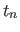
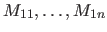
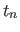
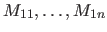
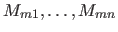
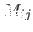
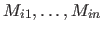
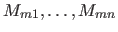
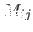
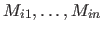

Next: Example Up: Defining Predicates Previous: Example Contents
member(X,[Y|_]) ?=> X=Y. member(X,[_|L]) => member(X,L).
The pattern [Y|_] matches any list. The backtrackable rule makes a call nondeterministic, and the predicate can be used to retrieve elements from a list one at a time through backtracking.
Picat> member(X,[1,2,3]) X=1; X=2; X=3; noAfter Picat returns an answer, users can type a semicolon immediately after the answer to ask for the next answer. If users only want one answer to be returned from a call, they can use once to stop backtracking.
The version of member that checks if a term occurs in a list can be defined as follows:
membchk(X,[X|_]) => true. membchk(X,[_|L]) => membchk(X,L).The first rule is applicable to a call if the second argument is a list and the first argument of the call is identical to the first element of the list.
Picat allows inclusion of predicate facts in the form  (
( ,
, ,) in predicate definitions. Facts are translated into pattern-matching rules before they are compiled. A predicate definition that consists of facts can be preceded by an index declaration in the form index (
)
,) in predicate definitions. Facts are translated into pattern-matching rules before they are compiled. A predicate definition that consists of facts can be preceded by an index declaration in the form index (
)  (
) where each  is either (meaning indexed) or (meaning not indexed). For each index pattern (
), the compiler generates a version of the predicate that indexes all of the arguments.
(
) where each  is either (meaning indexed) or (meaning not indexed). For each index pattern (
), the compiler generates a version of the predicate that indexes all of the arguments.
Claudio Cesar de Sa 2016-05-29